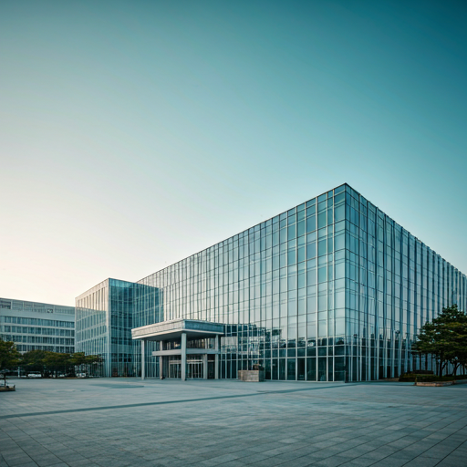

О Hongik University
Hongik University — один из самых известных университетов Южной Кореи, особенно в области дизайна, искусства и архитектуры. Основан в 1946 году. Мы формируем будущее через творчество и инновации.
Hongik University — один из самых известных университетов Южной Кореи, особенно в области дизайна, искусства и архитектуры. Основан в 1946 году. Мы формируем будущее через творчество и инновации.

1946
Южная Корея
Сеул
Начав свой путь в 1946 году как колледж Хонгик, университет пережил десятилетия трансформаций, став эпицентром художественного образования Кореи. Мы прошли путь от послевоенного восстановления до статуса глобального лидера в креативных индустриях.
Университет располагает двумя уникальными локациями. Сеульский кампус находится в самом сердце района Хондэ — культурного и творческого центра столицы. Кампус Седжон предлагает просторные современные лаборатории для технических и междисциплинарных исследований.
Свобода выражения и постоянный поиск новых форм в искусстве и дизайне.
Интеграция новейших технологий в образовательный процесс и архитектуру.
Поддержка междисциплинарного сотрудничества и глобального нетворкинга.
Hongik University
Ведущий образовательный центр Южной Кореи в области визуальных искусств. Мы готовим лидеров завтрашнего дня в самом динамичном районе Сеула.
Полезные ссылки
Контакты
94 Wausan-ro, Mapo-gu, Seoul South Korea, 04066